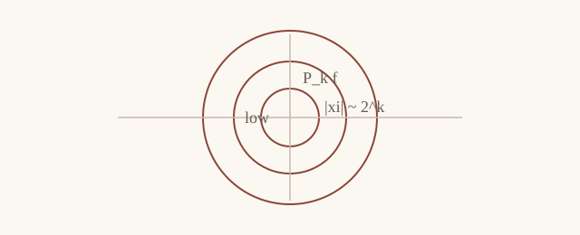

这是一篇 Obsidian 样例笔记，用来测试导入到 Hexo 后的数学写作效果。我们希望保留普通 Markdown 的写作体验，同时把 Obsidian 的 callout 转成网页里更适合数学笔记的样式。
频率分解
设 \(f\in \mathcal{S}'(\mathbb{R}^d)\)。Littlewood-Paley 分解的基本想法是把 \(f\) 分解到不同的频率尺度上。

Definition (Dyadic decomposition). 设 \(\{\varphi_k\}_{k\geq 0}\) 是一族光滑函数，并且每个 \(\varphi_k\) 主要支撑在频率环 \(|\xi|\sim 2^k\) 上。我们称
\[P_k f = \mathcal{F}^{-1}(\varphi_k \widehat f)\]
为 \(f\) 的第 \(k\) 个 dyadic block。
Lemma (Square function estimate). 对 \(1<p<\infty\)，Littlewood-Paley 平方函数满足
\[\left\|\left(\sum_{k\geq 0}|P_k f|^2\right)^{1/2}\right\|_{L^p}
\lesssim_p \|f\|_{L^p}.\]
Proof. 这里暂时不写完整证明。真实笔记中可以把 Calderon-Zygmund 分解、随机化或者 multiplier theorem 的论证放在这里。 □
Remark. 这个例子还测试了一个普通 wikilink：Fourier Analysis。导入器目前会把它转成纯文本，避免生成错误链接。
References
- E. M. Stein, Harmonic Analysis, Princeton University Press.
- L. Grafakos, Classical Fourier Analysis, Springer.